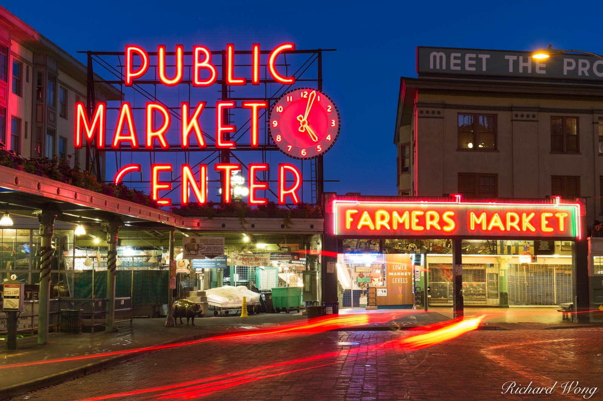
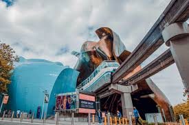
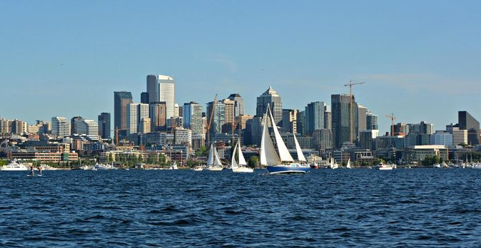
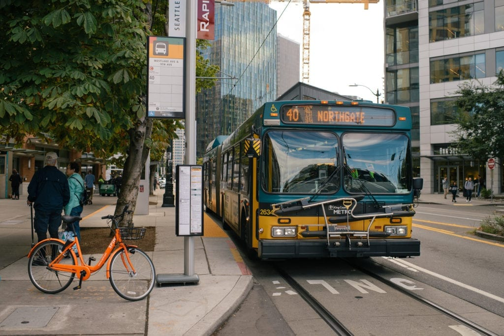

Seattle, often called the Emerald City, is a vibrant metropolis surrounded by lush evergreen forests and framed by breathtaking mountain ranges and water views. Known for its iconic landmarks and deep-rooted cultural scene, the city offers an unforgettable experience for visitors.
The Space Needle is a defining symbol of Seattle’s skyline. It offers panoramic views of the city, Mount Rainier, Elliott Bay, and the surrounding mountains. Pike Place Market, another must-see, is one of the oldest continuously operating public markets in the U.S. Here, you can witness the famous fish toss, enjoy local delicacies, and explore artisan crafts from local vendors.
Seattle’s charm goes beyond these iconic spots. The city is known for its rich music history, being the birthplace of grunge and home to legends like Jimi Hendrix. Music lovers will enjoy visiting the Museum of Pop Culture (MoPOP), which features exhibits on everything from rock ‘n’ roll to science fiction.
For nature lovers, Seattle is a paradise. You can kayak on Lake Union with the city skyline in the background, hike through nearby forests, or take a ferry to the picturesque islands of Puget Sound. Whether you’re a foodie, an outdoor enthusiast, or a culture seeker, Seattle offers something for everyone, from gourmet coffee culture to quirky art installations like the Fremont Troll and Gas Works Park.
The main airport is Seattle-Tacoma International (SEA).
You can reach the city via the light rail or by using Uber or Lyft.
The city's public transportation is reliable and affordable.
Cost: Light Rail = $3, Uber/Lyft = $30
Seattle offers various accommodation options suited to different travel styles:
- Downtown: Close to the Space Needle and major attractions.
- Capitol Hill: Known for its great nightlife.
- Fremont: Perfect for lovers of quirky, artsy vibes.
Recommended accommodations: ['The Edgewater', 'Hotel Max', 'Airbnb']
Seattle is packed with exciting activities for everyone:
- Space Needle: Enjoy a 360° panoramic view of the city.
- Pike Place Market: Famous for its fresh produce and vibrant atmosphere.
- Chihuly Garden and Glass: Experience stunning glass sculptures.
- Discovery Park: Perfect for hiking and enjoying waterfront views.
Seattle's weather can be unpredictable, so it's important to pack smart:
- Layers: Easily removable layers for fluctuating temperatures throughout the day.
- Rain gear: Bring a rain jacket to blend in with locals (umbrellas are less common).
- Comfortable shoes: Seattle is a very walkable city, so be sure to bring comfortable walking shoes.
Check the weekly weather forecast for Seattle here.
Seattle can be pricey, but with the right planning, sticking to a budget is manageable.
Here are some price ranges you can expect:
- Flights: Around $300 to $600, depending on the season.
- Hotels: Mid-range hotels start at $150 per night and up.
- Food: Expect to spend $50 per day on dining out.
trip_cost_estimate = {'Flights': '$300+', 'Hotels': '$150+', 'Food': '$50/day'}